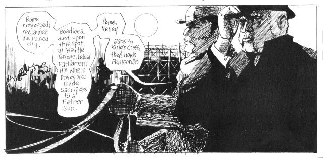
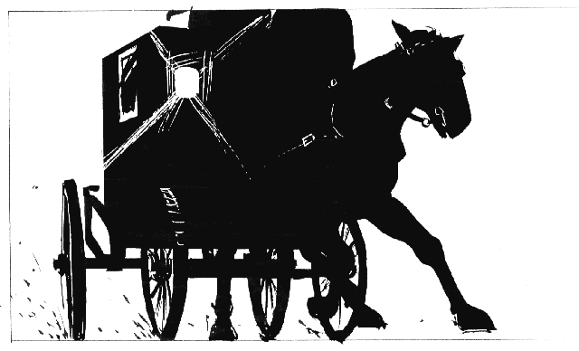

by Alan Moore (author), Eddie Campbell (artist) (1989) 
Moore has almost single-handedly transformed the definition of the comic
industry in the last 20 years, and this fetishistically researched
comic-book dramatisation of the dark and macabre Jack the Ripper murders
is no exception to his visionary high standards. Moore plunges headlong
into the sensational conspiracy theory that Royal Physician, Dr. William
Gull, killed East End prostitutes to silence the story of an
illegitimate royal baby, under the direct orders of the implacable Queen
Victoria herself.
Dr Gull regards his mission as the great work of his life, which will
not only quash the threat to the crown, but also fulfil ancient pagan
destinies, reasserting the male dominance over matriarchy that began
when the Romans reclaimed London and slew Queen Boadicea. Gull knows
this because he has knelt before his God, who told him just what needed
to be done. As a doctor, Gull knows that these visions are madness,
brought about by his stroke of the previous year. As a man, however, he
responds that "If this is madness, who'd be sane?", and, embracing the
subjective reality of his hallucinations, he goes about his work with
gusto, confiding along the way in his witless coachman and reluctant
accomplice, Nettley.

The story is a tapestry, woven on many levels. The iniquities of wealth
and power are richly depicted as the poverty-stricken residents of the
East End are contrasted with the powers-that-be, who move swiftly and
decisively to ensure that Gull is never caught nor found out, for fear
of scandal, even while he goes on killing with impunity.
The appalling violence of the murders and dismemberment of the victims
is shown in unflinching detail, one pivotal 34-page chapter "The Best of
all Tailors", consisting solely of the actions of Gull, a renowned
surgeon, with his victim in a tiny, squalid room, which made me
profoundly grateful that the sketches are only in black-and-white.
Such graphic nastiness is not for no reason. Gull is convinced that the
act of violence is a pivotal part of the ancient and grisly prophesies
he is enacting. Under the psychological strain of each successive
murder, Gull experiences increasingly vivid hallucinations, symptoms of
his condition. But then, something altogether strange starts to happen.
As his visions become more vivid, Gull begins to experience glimpses of
the future. Visions of our time. At times and places where people have
historically claimed to have seen the ghost of Jack the Ripper, Moore
cunningly reverses the perspective, allowing Gull to see them also. By
the end, Gull's visions have him stalking the sterile hallways of the
modern world in blood-soaked shirtsleeves, roaring at oblivious office
workers, exhorting them to look up and remember the history from which
our century was birthed in blood. The ancient magic that Gull raved
about was real, while we have lost our connection to our violent and
animal past, and with it, our very humanity.

Rating: 10/10.
Cor blimey it's a classic.
{kind=link}